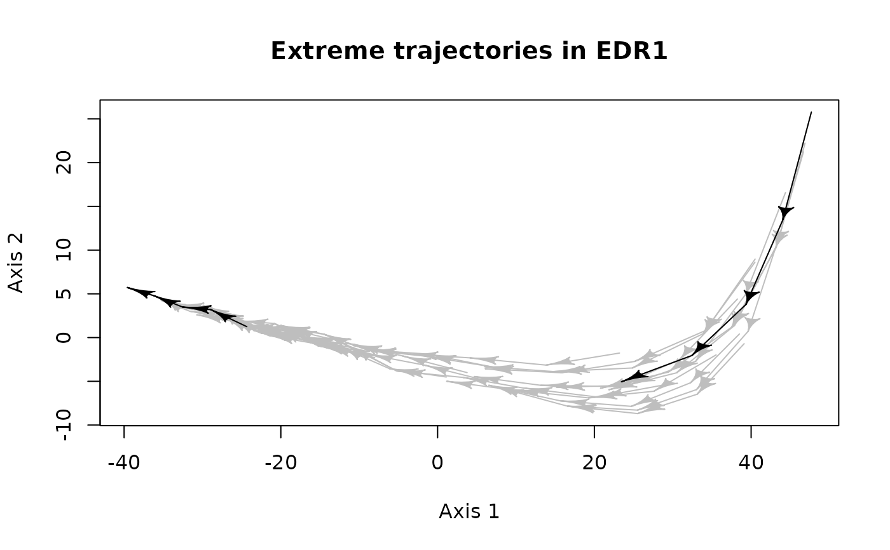
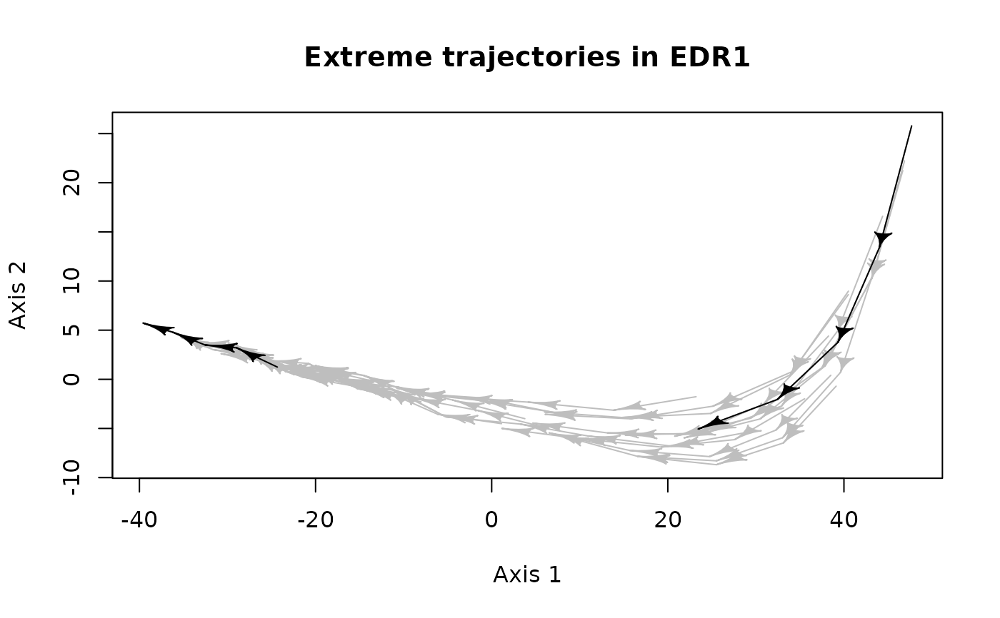

Plot representative trajectories of an Ecological Dynamic Regime (EDR) in the state space distinguishing between the segments belonging to real trajectories of the EDR and the artificial links between segments.
Arguments
- x
Object of class
RETRA.- d
Symmetric matrix or
distobject containing the dissimilarities between each pair of states of all trajectories in the EDR or data frame containing the coordinates of all trajectory states in an ordination space.- trajectories
Vector indicating the trajectory or site to which each state in
dbelongs.- states
Vector of integers indicating the order of the states in
dfor each trajectory.- select_RT
Optional string indicating the name of a representative trajectory that must be highlighted in the plot. By default (
select_RT=NULL), all representative trajectories are represented with the same color.- traj.colors
Specification for the color of all individual trajectories (defaults "grey") or a vector with length equal to the number of trajectories indicating the color for each individual trajectory.
- RT.colors
Specification for the color of representative trajectories (defaults "black").
- sel.color
Specification for the color of the selected representative trajectory (defaults "red"). Only if
!is.null(select_RT).- link.color
Specification for the color of the links between trajectory segments forming representative trajectories. By default, the same color than
RT.colorsis used.- link.lty
The line type of the links between trajectory segments forming representative trajectories. Defaults 2 = "dashed" (See graphics::par).
- axes
An integer vector indicating the pair of axes in the ordination space to be plotted.
- ...
Arguments for generic
plot().
Value
The function plot() plots a set of individual trajectories and the
representative trajectories in an ordination space defined through d or
calculated by applying metric multidimensional scaling (mMDS; Borg and Groenen,
2005) to d.
References
Borg, I., & Groenen, P. J. F. (2005). Modern Multidimensional Scaling (2nd ed.). Springer.
Sánchez-Pinillos, M., Kéfi, S., De Cáceres, M., Dakos, V. 2023. Ecological Dynamic Regimes: Identification, characterization, and comparison. Ecological Monographs. doi:10.1002/ecm.1589
See also
retra_edr() for identifying representative trajectories in EDRs applying
RETRA-EDR.
define_retra() for defining representative trajectories from a subset of
segments or trajectory features.
summary() for summarizing representative trajectories in EDRs.
Examples
# Example 1 -----------------------------------------------------------------
# d contains the dissimilarities between trajectory states
d <- EDR_data$EDR1$state_dissim
# trajectories and states are defined according to `d` entries.
trajectories <- EDR_data$EDR1$abundance$traj
states <- EDR_data$EDR1$abundance$state
# x defined from retra_edr(). We obtain three representative trajectories.
RT <- retra_edr(d = d, trajectories = trajectories, states = states, minSegs = 5)
summary(RT)
#> ID Size Length Avg_link Sum_link Avg_density Max_density Avg_depth
#> T1 T1 3 0.2669408 NA NA 6.500000 7 4.500000
#> T2 T2 15 0.9270207 0.05244879 0.3146927 7.125000 9 5.125000
#> T3 T3 13 0.6756596 0.04291652 0.2145826 7.428571 9 5.285714
#> Max_depth
#> T1 5
#> T2 7
#> T3 7
# Plot individual trajectories in blue and representative trajectories in orange,
# "T2" will be displayed in green. Artificial links will be displayed with a
# dotted line.
plot(x = RT, d = d, trajectories = trajectories, states = states, select_RT = "T2",
traj.colors = "lightblue", RT.colors = "orange", sel.color = "darkgreen",
link.lty = 3, main = "Representative trajectories in EDR1")
 # Example 2 -----------------------------------------------------------------
# d contains the coordinates in an ordination space. For example, we use
# the coordinates of the trajectory states after applying a principal component
# analysis (PCA) to an abundance matrix.
abun <- EDR_data$EDR1$abundance
pca <- prcomp(abun[, -c(1:3)])
coord <- data.frame(pca$x)
# trajectories and states are defined according to the abundance matrix
# used in the PCA
trajectories <- EDR_data$EDR1$abundance$traj
states <- EDR_data$EDR1$abundance$state
# Instead of using the representative trajectories obtained from `retra_edr()`,
# we will define the set of trajectories that we want to highlight. For example,
# we can select the trajectories whose initial and final states are in the
# extremes of the first axis.
T1 <- trajectories[which.max(coord[, 1])]
T2 <- trajectories[which.min(coord[, 1])]
RT_traj <- c(trajectories[trajectories %in% T1],
trajectories[trajectories %in% T2])
RT_states <- c(states[which(trajectories %in% T1)],
states[which(trajectories %in% T2)])
# Create a data frame to generate a RETRA object using define_retra
RT_df <- data.frame(RT = c(rep("T1", sum(trajectories %in% T1)),
rep("T2", sum(trajectories %in% T2))),
RT_traj = RT_traj,
RT_states = as.integer(RT_states))
RT_retra <- define_retra(data = RT_df)
# Plot the defined trajectories with the default graphic values
plot(x = RT_retra, d = coord, trajectories = trajectories, states = states,
main = "Extreme trajectories in EDR1")

# Example 2 -----------------------------------------------------------------
# d contains the coordinates in an ordination space. For example, we use
# the coordinates of the trajectory states after applying a principal component
# analysis (PCA) to an abundance matrix.
abun <- EDR_data$EDR1$abundance
pca <- prcomp(abun[, -c(1:3)])
coord <- data.frame(pca$x)
# trajectories and states are defined according to the abundance matrix
# used in the PCA
trajectories <- EDR_data$EDR1$abundance$traj
states <- EDR_data$EDR1$abundance$state
# Instead of using the representative trajectories obtained from `retra_edr()`,
# we will define the set of trajectories that we want to highlight. For example,
# we can select the trajectories whose initial and final states are in the
# extremes of the first axis.
T1 <- trajectories[which.max(coord[, 1])]
T2 <- trajectories[which.min(coord[, 1])]
RT_traj <- c(trajectories[trajectories %in% T1],
trajectories[trajectories %in% T2])
RT_states <- c(states[which(trajectories %in% T1)],
states[which(trajectories %in% T2)])
# Create a data frame to generate a RETRA object using define_retra
RT_df <- data.frame(RT = c(rep("T1", sum(trajectories %in% T1)),
rep("T2", sum(trajectories %in% T2))),
RT_traj = RT_traj,
RT_states = as.integer(RT_states))
RT_retra <- define_retra(data = RT_df)
# Plot the defined trajectories with the default graphic values
plot(x = RT_retra, d = coord, trajectories = trajectories, states = states,
main = "Extreme trajectories in EDR1")
